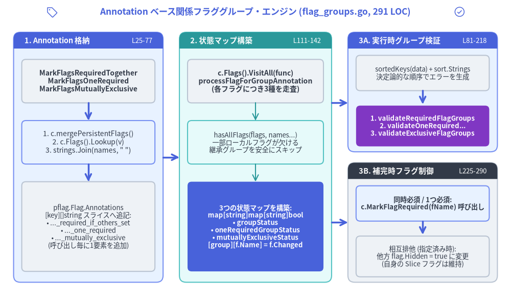
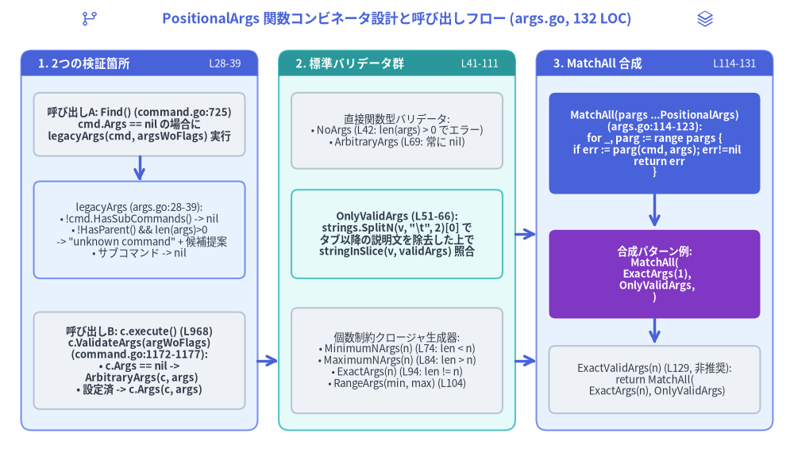

第4章: Annotation ベースの関係フラググループと PositionalArgs コンビネータ
第1章では Command が管理する5つの遅延初期化 *pflag.FlagSet（flags, pflags, lflags, iflags, parentsPflags）を、第3章では c.execute() における6段階のフック実行パイプラインを解説しました。本章では、Cobra v1.10.2 の Layer 3 を構成する2つの検証エンジン――Annotation ベース関係フラググループ・エンジン（flag_groups.go、291 LOC）および PositionalArgs 関数コンビネータ・エンジン（args.go、132 LOC）――の内部実装をソースコードの行番号単位で解剖します。これら計 423 LOC の実装は、複数フラグ間の関係制約（RequiredTogether, OneRequired, MutuallyExclusive）の実行時検証だけでなく、<TAB> シェル補完時の動的なフラグ必須化・非表示化、および関数合成による位置引数バリデーションを担っています。

Source Code
from drawlib.canvas import save, setup
from drawlib.icons import phosphor
from drawlib.lines import line
from drawlib.shapes import rectangle
from drawlib.smartarts import Panel
from drawlib.styles import Styles
from drawlib.text import text
setup(width=188, height=112)
phosphor.tag((19, 107.5), width=4.5, style=Styles.Primary)
text(
(94, 107.5),
"Annotation ベース関係フラググループ・エンジン (flag_groups.go, 291 LOC)",
style=Styles.PrimaryBold.patch(text_size=12.5),
)
phosphor.check_circle((169, 107.5), width=4.5, style=Styles.Primary)
# Panel 1: Registration & pflag.Flag.Annotations Storage
Panel(
"1. Annotation 格納",
"L25-77",
style=Styles.PrimaryNeutral,
header_style=Styles.PrimaryFlat,
text_style=Styles.WhiteBold.patch(text_size=10.5),
description_style=Styles.White.patch(text_size=9.5),
header_height=6.0,
).draw((5, 8), width=55, height=92)
rectangle(
(32.5, 82),
width=49,
height=16,
style=Styles.Neutral.patch(shape_r=1.5),
text="MarkFlagsRequiredTogether\nMarkFlagsOneRequired\nMarkFlagsMutuallyExclusive",
text_style=Styles.DarkBold.patch(text_size=10.0),
)
line((32.5, 74), (32.5, 67.5), arrow_head="->", style=Styles.PrimaryBold)
rectangle(
(32.5, 59.5),
width=49,
height=16,
style=Styles.PrimaryNeutral.patch(shape_r=1.5),
text="1. c.mergePersistentFlags()\n2. c.Flags().Lookup(v)\n3. strings.Join(names, \" \")",
text_style=Styles.Dark.patch(text_size=10.0),
)
line((32.5, 51.5), (32.5, 45), arrow_head="->", style=Styles.PrimaryBold)
rectangle(
(32.5, 28.5),
width=49,
height=33,
style=Styles.Neutral.patch(shape_r=1.5),
text="pflag.Flag.Annotations\n[key][]string スライスへ追記:\n• ..._required_if_others_set\n• ..._one_required\n• ..._mutually_exclusive\n(呼び出し毎に1要素を追加)",
text_style=Styles.Dark.patch(text_size=9.5),
)
# Panel 2: Status Matrix Builder
Panel(
"2. 状態マップ構築",
"L111-142",
style=Styles.SecondaryNeutral,
header_style=Styles.SecondaryFlat,
text_style=Styles.WhiteBold.patch(text_size=10.5),
description_style=Styles.White.patch(text_size=9.5),
header_height=6.0,
).draw((66, 8), width=56, height=92)
rectangle(
(94, 82),
width=50,
height=16,
style=Styles.Neutral.patch(shape_r=1.5),
text="c.Flags().VisitAll(func)\nprocessFlagForGroupAnnotation\n(各フラグにつき3種を走査)",
text_style=Styles.DarkBold.patch(text_size=10.0),
)
line((94, 74), (94, 67.5), arrow_head="->", style=Styles.Secondary)
rectangle(
(94, 59.5),
width=50,
height=16,
style=Styles.SecondaryNeutral.patch(shape_r=1.5),
text="hasAllFlags(flags, names...)\n一部ローカルフラグが欠ける\n継承グループを安全にスキップ",
text_style=Styles.Dark.patch(text_size=9.5),
)
line((94, 51.5), (94, 45), arrow_head="->", style=Styles.Secondary)
rectangle(
(94, 28.5),
width=50,
height=33,
style=Styles.PrimaryFlat.patch(shape_r=1.5),
text="3つの状態マップを構築:\nmap[string]map[string]bool\n• groupStatus\n• oneRequiredGroupStatus\n• mutuallyExclusiveStatus\n[group][f.Name] = f.Changed",
text_style=Styles.WhiteBold.patch(text_size=9.5),
)
# Panel 3A: ValidateFlagGroups() Execution Path
Panel(
"3A. 実行時グループ検証",
"L81-218",
style=Styles.PrimaryNeutral,
header_style=Styles.PrimaryFlat,
text_style=Styles.WhiteBold.patch(text_size=10.5),
description_style=Styles.White.patch(text_size=9.5),
header_height=6.0,
).draw((128, 56), width=55, height=44)
rectangle(
(155.5, 85),
width=49,
height=13,
style=Styles.Neutral.patch(shape_r=1.5),
text="sortedKeys(data) + sort.Strings\n決定論的な順序でエラーを生成",
text_style=Styles.Dark.patch(text_size=9.5),
)
line((155.5, 78.5), (155.5, 73.5), arrow_head="->", style=Styles.PrimaryBold)
rectangle(
(155.5, 65.5),
width=49,
height=15,
style=Styles.AccentFlat.patch(shape_r=1.5),
text="1. validateRequiredFlagGroups\n2. validateOneRequired...\n3. validateExclusiveFlagGroups",
text_style=Styles.WhiteBold.patch(text_size=9.5),
)
# Panel 3B: enforceFlagGroupsForCompletion() Completion Path
Panel(
"3B. 補完時フラグ制御",
"L225-290",
style=Styles.Neutral,
header_style=Styles.DarkFlat,
text_style=Styles.WhiteBold.patch(text_size=10.5),
description_style=Styles.White.patch(text_size=9.5),
header_height=6.0,
).draw((128, 8), width=55, height=44)
rectangle(
(155.5, 37),
width=49,
height=13,
style=Styles.PrimaryNeutral.patch(shape_r=1.5),
text="同時必須 / 1つ必須:\nc.MarkFlagRequired(fName) 呼び出し",
text_style=Styles.DarkBold.patch(text_size=9.5),
)
line((155.5, 30.5), (155.5, 25.5), arrow_head="->", style=Styles.PrimaryBold)
rectangle(
(155.5, 17.5),
width=49,
height=15,
style=Styles.Neutral.patch(shape_r=1.5),
text="相互排他 (指定済み時):\n他方 flag.Hidden = true に変更\n(自身の Slice フラグは維持)",
text_style=Styles.Dark.patch(text_size=9.5),
)
# Inter-panel connectors
line((60, 54), (66, 54), arrow_head="->", style=Styles.PrimaryBold)
line((122, 74), (128, 74), arrow_head="->", style=Styles.PrimaryBold)
line((122, 30), (128, 30), arrow_head="->", style=Styles.PrimaryBold)
save()
1. pflag.Flag.Annotations による構造体フィールド追加ゼロのフラググループ設計
Cobra の関係フラググループ機構（flag_groups.go）における最大の設計上の特徴は、Command 構造体に新しいフィールドを1つも追加していない点にあります。Command 側にグループ管理用のスライスやマップを持たせると、永続フラグ（PersistentFlags）がサブコマンドへ継承される際に複雑な同期処理が必要になりますが、Cobra は各 *pflag.Flag が標準で備えている Annotations マップ（map[string][]string）の内部にグループ定義文字列を直接格納することでこれを解決しています。
1.1 3つの非公開 Annotation キー定数（flag_groups.go:25–29）
flag_groups.go の冒頭では、以下の3つの非公開（unexported）定数が定義されています。
const (
requiredAsGroupAnnotation = "cobra_annotation_required_if_others_set"
oneRequiredAnnotation = "cobra_annotation_one_required"
mutuallyExclusiveAnnotation = "cobra_annotation_mutually_exclusive"
)
| 登録メソッド | 行番号 | Annotation キー (pflag.Flag.Annotations) |
検証される関係制約（不変条件） |
|---|---|---|---|
c.MarkFlagsRequiredTogether(flagNames ...string) |
flag_groups.go:33–45 |
"cobra_annotation_required_if_others_set" |
All-or-None（同時必須）: グループ内の1つ以上のフラグが指定（Changed == true）された場合、グループ内のすべてのフラグが指定されていなければならない。 |
c.MarkFlagsOneRequired(flagNames ...string) |
flag_groups.go:49–61 |
"cobra_annotation_one_required" |
At-Least-One（最低1つ必須）: コマンド実行時にグループ内の少なくとも1つのフラグが指定（Changed == true）されていなければならない。 |
c.MarkFlagsMutuallyExclusive(flagNames ...string) |
flag_groups.go:65–77 |
"cobra_annotation_mutually_exclusive" |
At-Most-One（相互排他）: グループ内で同時に指定できるフラグは高々1つ（len(set) <= 1）まで。 |
1.2 登録手順と複数グループ所属を可能にするスライス追記（flag_groups.go:33–77）
3つの登録メソッドはすべて、完全に同一の3ステップで動作します。
- 永続フラグの即時マージ（
c.mergePersistentFlags()）: メソッド冒頭で必ずc.mergePersistentFlags()（flag_groups.go:34,L50,L66）を呼び出します。第1章で詳述した通り、これにより親コマンドから継承された永続フラグ（c.PersistentFlags(),c.parentsPflags）とローカルフラグがc.flagsに統合され、継承された永続フラグとサブコマンド固有のローカルフラグをまたぐフラググループも構成可能になります。 - フラグ存在確認と即時 Panic（
c.Flags().Lookup(v)）: 引数flagNamesの各フラグ名vに対してf := c.Flags().Lookup(v)を実行し、f == nilの場合はpanic(fmt.Sprintf("Failed to find flag %q ...", v))を発生させます（L37–39,L53–55,L69–71）。実行時ではなく CLI 初期化時に即座にクラッシュさせることで、フラグ名のタイポを確実に検出します。 - 空白区切りグループ文字列のスライス追記（
strings.Join(flagNames, " ")）: グループ全体のフラグ名を半角スペースで結合した文字列strings.Join(flagNames, " ")を生成し、既存のf.Annotations[key]スライスの末尾へappendしてc.Flags().SetAnnotation(...)で保存します。
// flag_groups.go:65-77
func (c *Command) MarkFlagsMutuallyExclusive(flagNames ...string) {
c.mergePersistentFlags()
for _, v := range flagNames {
f := c.Flags().Lookup(v)
if f == nil {
panic(fmt.Sprintf("Failed to find flag %q and mark it as being in a mutually exclusive flag group", v))
}
// Each time this is called is a single new entry; this allows it to be a member of multiple groups if needed.
if err := c.Flags().SetAnnotation(v, mutuallyExclusiveAnnotation, append(f.Annotations[mutuallyExclusiveAnnotation], strings.Join(flagNames, " "))); err != nil {
panic(err)
}
}
}
なぜスライス要素として追記することで複数グループへの重複所属が可能になるのか
pflag.Flag.Annotations の型は map[string][]string です。上書きではなく append(f.Annotations[key], strings.Join(flagNames, " ")) で 呼び出しごとに1つのスライス要素を追加 するため、1つのフラグが複数の独立した関係グループに同時に所属できます。
たとえば、フラグ "a" を2つの異なる相互排他グループに登録したとします。
cmd.MarkFlagsMutuallyExclusive("a", "b")
cmd.MarkFlagsMutuallyExclusive("a", "c")
このとき、flagA.Annotations["cobra_annotation_mutually_exclusive"] には []string{"a b", "a c"} という2要素が格納されます。検証時には "a b" と "a c" が独立したグループキーとして評価されるため、--b --c の同時指定は許可しつつ、--a --b や --a --c の同時指定だけを正確に拒否できます。さらに、mergePersistentFlags() によって *pflag.Flag ポインタが子孫コマンドの FlagSet へコピーされる際、この Annotations マップも自動的に引き継がれます。
2. 実行時バリデーションエンジン: ValidateFlagGroups()
c.execute()（command.go:1010–1012）では、PersistentPreRunE、PreRunE、および単一必須フラグ検証 c.ValidateRequiredFlags() が完了した直後――かつ c.RunE / c.Run が呼ばれる直前――に c.ValidateFlagGroups() が呼び出されます。PreRunE の後に検証を行うのは、Viper 等を用いた設定ファイル読み込みフック（PersistentPreRunE / PreRunE）内でフラグ値をプログラムから事後設定したり Annotation を調整したりするユースケースを成立させるためです。
2.1 processFlagForGroupAnnotation による状態マトリクス構築（flag_groups.go:81–142）
c.DisableFlagParsing が true の場合、ValidateFlagGroups() は即座に nil を返します（L82–84）。それ以外の場合、map[string]map[string]bool 型の3つの2階層ステータスマップ（第1キーが空白区切りのグループ名 "username password"、第2キーが各フラグ名 flagName、値が pflag.Changed）を初期化します。
// flag_groups.go:90-97
groupStatus := map[string]map[string]bool{}
oneRequiredGroupStatus := map[string]map[string]bool{}
mutuallyExclusiveGroupStatus := map[string]map[string]bool{}
flags.VisitAll(func(pflag *flag.Flag) {
processFlagForGroupAnnotation(flags, pflag, requiredAsGroupAnnotation, groupStatus)
processFlagForGroupAnnotation(flags, pflag, oneRequiredAnnotation, oneRequiredGroupStatus)
processFlagForGroupAnnotation(flags, pflag, mutuallyExclusiveAnnotation, mutuallyExclusiveGroupStatus)
})
c.Flags() 内の各フラグに対し、processFlagForGroupAnnotation（flag_groups.go:121–142）は pflag.Annotations[annotation] を走査します。
// flag_groups.go:111-142
func hasAllFlags(fs *flag.FlagSet, flagnames ...string) bool {
for _, fname := range flagnames {
f := fs.Lookup(fname)
if f == nil {
return false
}
}
return true
}
func processFlagForGroupAnnotation(flags *flag.FlagSet, pflag *flag.Flag, annotation string, groupStatus map[string]map[string]bool) {
groupInfo, found := pflag.Annotations[annotation]
if found {
for _, group := range groupInfo {
if groupStatus[group] == nil {
flagnames := strings.Split(group, " ")
// Only consider this flag group at all if all the flags are defined.
if !hasAllFlags(flags, flagnames...) {
continue
}
groupStatus[group] = make(map[string]bool, len(flagnames))
for _, name := range flagnames {
groupStatus[group][name] = false
}
}
groupStatus[group][pflag.Name] = pflag.Changed
}
}
}
なぜ hasAllFlags(flags, flagnames...) が永続フラグとローカルフラグの混合グループに不可欠なのか
親コマンド parentCmd が 永続フラグ --region と ローカルフラグ --zone を定義し、parentCmd.MarkFlagsRequiredTogether("region", "zone") を呼んだとします。このとき --region と --zone の双方に "region zone" という Annotation が付与されます。
ここでサブコマンド childCmd を実行した場合を考えます。
childCmdは永続フラグ--region（およびその"region zone"Annotation）を継承します。- しかし、
parentCmdのローカルフラグである--zoneはchildCmdには継承されません。
childCmd.ValidateFlagGroups() が --region を走査した際、processFlagForGroupAnnotation は "region zone" を分割して hasAllFlags(childCmd.Flags(), "region", "zone")（L129）を呼び出します。childCmd.Flags().Lookup("zone") は nil を返すため hasAllFlags は false となり、childCmd 上では "region zone" グループが安全にスキップされます（L129–131）。すなわち、実行対象コマンドの FlagSet 上にグループ内の全フラグが揃っている場合のみそのグループ制約が有効化されます。
2.2 sortedKeys による決定論的ソートと3段階検証（flag_groups.go:99–218）
Go の map 反復順序はランダム化されているため、map[string]map[string]bool をそのままループすると、複数グループ違反時や複数フラグ欠落時にエラーメッセージが毎回変わる問題が生じます。Cobra は以下の2段階で完全な決定論的（deterministic）順序を保証しています。
- グループキーの辞書順ソート（
sortedKeys(data)、flag_groups.go:209–218）: マップの第1キー（flagList）をスライスに抽出してsort.Strings(keys)でソートします。 - 違反フラグ名スライスのソート（
sort.Strings(...)、L160,L182,L203）: エラーメッセージに埋め込むunsetまたはsetフラグ配列もsort.Stringsでソートしてからフォーマットします。
その後、ValidateFlagGroups() は以下の順序で3つの検証関数を実行します（L99–108）。
| 段階 | 検証ヘルパー関数 | 行番号 | 判定条件と返却される正確なエラーフォーマット |
|---|---|---|---|
| 1. 同時必須 | validateRequiredFlagGroups(groupStatus) |
L144–165 |
!isSet のフラグを unset に収集。len(unset) == len(flagnameAndStatus)（未指定）または len(unset) == 0（全指定）なら正常。それ以外は unset をソートし次を返却:if any flags in the group [%v] are set they must all be set; missing %v |
| 2. 1つ必須 | validateOneRequiredFlagGroups(oneRequiredGroupStatus) |
L167–186 |
isSet のフラグを set に収集。len(set) >= 1 なら正常。0個の場合は次を返却:at least one of the flags in the group [%v] is required |
| 3. 相互排他 | validateExclusiveFlagGroups(mutuallyExclusiveGroupStatus) |
L188–207 |
isSet のフラグを set に収集。len(set) == 0 || len(set) == 1 なら正常。2個以上の場合は set をソートし次を返却:if any flags in the group [%v] are set none of the others can be; %v were all set |
3. シェル補完時の動的メタデータ変更: enforceFlagGroupsForCompletion()
関係フラググループは実行時のエラーチェックだけでなく、getCompletions()（completions.go:430）における <TAB> 補完候補の動的フィルタリングにも活用されます。フラグ補完候補を生成する直前に呼ばれる finalCmd.enforceFlagGroupsForCompletion()（flag_groups.go:225–290）は、processFlagForGroupAnnotation で同じ3つの状態マトリクスを構築した上で（L230–238）、メモリ上の pflag.Flag メタデータを直接書き換えます。
- 同時必須グループの残りフラグを必須化（
flag_groups.go:242–251）:groupStatus内のグループで1つでもisSet == trueのフラグが存在する場合、グループ内の全フラグ名fNameに対して_ = c.MarkFlagRequired(fName)（L247）を呼び出します。getCompletions()は未指定の必須フラグをcompleteRequireFlags()（completions.go:440,528）で最優先提案するため、片方のフラグを入力した瞬間に相方のフラグが優先補完候補に昇格します。 - 未充足の1つ必須グループを全員必須化（
flag_groups.go:255–271）:oneRequiredGroupStatus内のグループで、まだ1つもフラグが指定されていない場合（!isSet）、グループ内の全フラグに対して_ = c.MarkFlagRequired(fName)（L266–270）を呼び出して補完候補に優先表示させます。ユーザーがグループ内のどれか1つを指定した時点でisSetがtrueとなり、残りのフラグは必須扱いから外れます。 - 相互排他グループの競合フラグを非表示化（
flag_groups.go:275–289）:mutuallyExclusiveGroupStatus内のグループでいずれかのフラグflagNameが指定済み（isSet == true）である場合、グループ内の他のフラグ（fName != flagName）に対してflag := c.Flags().Lookup(fName); flag.Hidden = true（L282–285）を設定し、補完候補から除外します。- なぜ
fName != flagNameで自分自身を除外しないのか:L279–280のコメントにある通り、すでに指定されたflagName自体がSliceやArray型の複数回指定可能フラグ（例:--tag a --tag <TAB>）である場合、2回目以降の入力でも引き続き補完候補として表示させる必要があるため、自身のHiddenは変更せず競合する他方のフラグのみを隠蔽します。
- なぜ
4. PositionalArgs 関数コンビネータ・アーキテクチャ (args.go)
flag_groups.go がフラグ間の制約を司るのに対し、args.go（132 LOC）はフラグ解析後に残った位置引数（argWoFlags := c.Flags().Args()）の検証を担います。Cobra は位置引数バリデータを第1級関数型 PositionalArgs として定義しています（args.go:22）。
type PositionalArgs func(cmd *Command, args []string) error
各 Command 構造体は Args PositionalArgs フィールド（command.go:112）を保持しており、関数値の直接代入（Args: cobra.NoArgs）、高階関数によるクロージャ生成（Args: cobra.ExactArgs(2)）、および cobra.MatchAll(...) による複数バリデータの直列合成が可能です。

Source Code
from drawlib.canvas import save, setup
from drawlib.icons import phosphor
from drawlib.lines import line
from drawlib.shapes import rectangle
from drawlib.smartarts import Panel
from drawlib.styles import Styles
from drawlib.text import text
setup(width=188, height=110)
phosphor.git_branch((21, 105.5), width=4.5, style=Styles.Primary)
text(
(94, 105.5),
"PositionalArgs 関数コンビネータ設計と呼び出しフロー (args.go, 132 LOC)",
style=Styles.PrimaryBold.patch(text_size=12.5),
)
phosphor.stack((167, 105.5), width=4.5, style=Styles.Primary)
# Panel 1: Two Call Sites (Find vs execute) & legacyArgs
Panel(
"1. 2つの検証箇所",
"L28-39",
style=Styles.PrimaryNeutral,
header_style=Styles.PrimaryFlat,
text_style=Styles.WhiteBold.patch(text_size=10.5),
description_style=Styles.White.patch(text_size=9.5),
header_height=6.0,
).draw((5, 8), width=56, height=90)
rectangle(
(33, 80.5),
width=50,
height=15,
style=Styles.Neutral.patch(shape_r=1.5),
text="呼び出しA: Find() (command.go:725)\ncmd.Args == nil の場合に\nlegacyArgs(cmd, argsWoFlags) 実行",
text_style=Styles.DarkBold.patch(text_size=9.5),
)
line((33, 73), (33, 67), arrow_head="->", style=Styles.PrimaryBold)
rectangle(
(33, 55.5),
width=50,
height=23,
style=Styles.PrimaryNeutral.patch(shape_r=1.5),
text="legacyArgs (args.go:28-39):\n• !cmd.HasSubCommands() -> nil\n• !HasParent() && len(args)>0\n -> \"unknown command\" + 候補提案\n• サブコマンド -> nil",
text_style=Styles.Dark.patch(text_size=9.5),
)
rectangle(
(33, 24.5),
width=50,
height=23,
style=Styles.Neutral.patch(shape_r=1.5),
text="呼び出しB: c.execute() (L968)\nc.ValidateArgs(argWoFlags)\n(command.go:1172-1177):\n• c.Args == nil ->\n ArbitraryArgs(c, args)\n• 設定済 -> c.Args(c, args)",
text_style=Styles.DarkBold.patch(text_size=9.5),
)
# Panel 2: Built-In Validators & Closure Factories
Panel(
"2. 標準バリデータ群",
"L41-111",
style=Styles.SecondaryNeutral,
header_style=Styles.SecondaryFlat,
text_style=Styles.WhiteBold.patch(text_size=10.5),
description_style=Styles.White.patch(text_size=9.5),
header_height=6.0,
).draw((66, 8), width=56, height=90)
rectangle(
(94, 79),
width=50,
height=18,
style=Styles.Neutral.patch(shape_r=1.5),
text="直接関数型バリデータ:\n• NoArgs (L42: len(args) > 0 でエラー)\n• ArbitraryArgs (L69: 常に nil)",
text_style=Styles.Dark.patch(text_size=9.5),
)
rectangle(
(94, 54.5),
width=50,
height=21,
style=Styles.SecondaryNeutral.patch(shape_r=1.5),
text="OnlyValidArgs (L51-66):\nstrings.SplitN(v, \"\\t\", 2)[0] で\nタブ以降の説明文を除去した上で\nstringInSlice(v, validArgs) 照合",
text_style=Styles.DarkBold.patch(text_size=9.5),
)
rectangle(
(94, 24.5),
width=50,
height=25,
style=Styles.Neutral.patch(shape_r=1.5),
text="個数制約クロージャ生成器:\n• MinimumNArgs(n) (L74: len < n)\n• MaximumNArgs(n) (L84: len > n)\n• ExactArgs(n) (L94: len != n)\n• RangeArgs(min, max) (L104)",
text_style=Styles.Dark.patch(text_size=9.5),
)
# Panel 3: MatchAll Combinator & Composition
Panel(
"3. MatchAll 合成",
"L114-131",
style=Styles.PrimaryNeutral,
header_style=Styles.PrimaryFlat,
text_style=Styles.WhiteBold.patch(text_size=10.5),
description_style=Styles.White.patch(text_size=9.5),
header_height=6.0,
).draw((127, 8), width=56, height=90)
rectangle(
(155, 76),
width=50,
height=24,
style=Styles.PrimaryFlat.patch(shape_r=1.5),
text="MatchAll(pargs ...PositionalArgs)\n(args.go:114-123):\nfor _, parg := range pargs {\n if err := parg(cmd, args); err!=nil\n return err\n}",
text_style=Styles.WhiteBold.patch(text_size=9.5),
)
line((155, 64), (155, 56), arrow_head="->", style=Styles.PrimaryBold)
rectangle(
(155, 45),
width=50,
height=21,
style=Styles.AccentFlat.patch(shape_r=1.5),
text="合成パターン例:\nMatchAll(\n ExactArgs(1),\n OnlyValidArgs,\n)",
text_style=Styles.WhiteBold.patch(text_size=9.5),
)
line((155, 34.5), (155, 28.5), arrow_head="->", style=Styles.PrimaryBold)
rectangle(
(155, 20),
width=50,
height=16,
style=Styles.Neutral.patch(shape_r=1.5),
text="ExactValidArgs(n) (L129, 非推奨):\nreturn MatchAll(\n ExactArgs(n), OnlyValidArgs)",
text_style=Styles.Dark.patch(text_size=9.5),
)
# Inter-panel arrows
line((61, 24.5), (66, 24.5), arrow_head="->", style=Styles.PrimaryBold)
line((122, 54.5), (127, 54.5), arrow_head="->", style=Styles.PrimaryBold)
line((122, 24.5), (127, 24.5), arrow_head="->", style=Styles.PrimaryBold)
save()
4.1 なぜ位置引数は Find() (legacyArgs) と execute() (ValidateArgs) の2箇所で検証されるのか
Cobra の内部アーキテクチャにおいて、Command.Args はライフサイクル上の2つの異なるフェーズで参照されます。
-
コマンド解決フェーズ（
command.go:724–727のFind()内）:TraverseChildrenがfalse（デフォルト）のとき、Find()がフラグ除去とツリー探索を終えた段階でcommandFound.Args == nilであれば、legacyArgs(commandFound, argsWoFlags)（args.go:28–39）が呼び出されます。// args.go:28-39 func legacyArgs(cmd *Command, args []string) error { // no subcommand, always take args if !cmd.HasSubCommands() { return nil } // root command with subcommands, do subcommand checking. if !cmd.HasParent() && len(args) > 0 { return fmt.Errorf("unknown command %q for %q%s", args[0], cmd.CommandPath(), cmd.findSuggestions(args[0])) } return nil }legacyArgsの3つの分岐には重要な意味があります。- サブコマンドを持たない葉コマンド（
!cmd.HasSubCommands()）: 任意の位置引数を受け入れます（return nil）。 - サブコマンドを持つルートコマンド（
!cmd.HasParent() && len(args) > 0）: 余った位置引数を「未知のサブコマンド名のタイポ」と見なし、レーベンシュタイン距離による候補提案cmd.findSuggestions(args[0])付きで"unknown command %q for %q%s"エラーを返します。（※サブコマンドを持たないルートコマンドに対してinitCompleteCmdやInitDefaultCompletionCmdが__completeやcompletionを即座にRemoveCommandで削除するのは、それらが残っているとcmd.HasSubCommands()がtrueになり、ルートコマンドが位置引数を受け取れなくなるためです。） - 親を持つ中間・葉サブコマンド（
cmd.HasParent()）:cmd.Args == nilであれば常にnilを返します。
- サブコマンドを持たない葉コマンド（
-
コマンド実行フェーズ（
command.go:968のc.execute()->command.go:1172–1177のValidateArgs）:c.execute()がフラグ解析を終え、フックチェーン（PersistentPreRunE/PreRunE）を開始する前にc.ValidateArgs(argWoFlags)を呼び出します。// command.go:1172-1177 func (c *Command) ValidateArgs(args []string) error { if c.Args == nil { return ArbitraryArgs(c, args) } return c.Args(c, args) }c.Argsが未設定（nil）の場合、Find()側で既にlegacyArgsチェックが完了しているため、ここでは常にnilを返すArbitraryArgs(c, args)にフォールバックします。
4.2 標準 PositionalArgs バリデータ・コンビネータ全一覧（args.go:41–131）
args.go で公開されている全バリデータおよび高階コンビネータの実装仕様は以下の通りです。
| バリデータ / コンビネータ | args.go 行番号 |
関数シグネチャ | 内部ロジックとエラー出力フォーマット |
|---|---|---|---|
NoArgs |
L42–46 |
func(cmd *Command, args []string) error |
len(args) > 0 の場合、fmt.Errorf("unknown command %q for %q", args[0], cmd.CommandPath()) を返却。 |
OnlyValidArgs |
L51–66 |
func(cmd *Command, args []string) error |
len(cmd.ValidArgs) == 0 なら nil。それ以外は strings.SplitN(v, "\t", 2)[0] でタブ以降の説明文を除去し、各引数を stringInSlice(v, validArgs) で検査。不一致時は fmt.Errorf("invalid argument %q for %q%s", v, cmd.CommandPath(), cmd.findSuggestions(args[0])) を返却。 |
ArbitraryArgs |
L69–71 |
func(cmd *Command, args []string) error |
無条件に nil を返却。 |
MinimumNArgs(n int) |
L74–81 |
func(n int) PositionalArgs |
クロージャを返却: len(args) < n の場合、fmt.Errorf("requires at least %d arg(s), only received %d", n, len(args))。 |
MaximumNArgs(n int) |
L84–91 |
func(n int) PositionalArgs |
クロージャを返却: len(args) > n の場合、fmt.Errorf("accepts at most %d arg(s), received %d", n, len(args))。 |
ExactArgs(n int) |
L94–101 |
func(n int) PositionalArgs |
クロージャを返却: len(args) != n の場合、fmt.Errorf("accepts %d arg(s), received %d", n, len(args))。 |
RangeArgs(min, max int) |
L104–111 |
func(min int, max int) PositionalArgs |
クロージャを返却: len(args) < min || len(args) > max の場合、fmt.Errorf("accepts between %d and %d arg(s), received %d", min, max, len(args))。 |
MatchAll(pargs ...PositionalArgs) |
L114–123 |
func(pargs ...PositionalArgs) PositionalArgs |
複数の PositionalArgs を順番に実行し、最初に非 nil エラーを返した時点で短絡（short-circuit）リターンする高階コンビネータ。 |
ExactValidArgs(n int) |
L129–131 |
func(n int) PositionalArgs |
(Deprecated) return MatchAll(ExactArgs(n), OnlyValidArgs) の1行で実装されている互換ラッパー。 |
4.3 OnlyValidArgs における \t（タブ区切り説明文）のストリップ処理（args.go:51–66）
OnlyValidArgs（args.go:51–66）は、第5章で解説する Shell Completion V2 エンジンと密接に連携しています。
// args.go:51-66
func OnlyValidArgs(cmd *Command, args []string) error {
if len(cmd.ValidArgs) > 0 {
// Remove any description that may be included in ValidArgs.
// A description is following a tab character.
validArgs := make([]string, 0, len(cmd.ValidArgs))
for _, v := range cmd.ValidArgs {
validArgs = append(validArgs, strings.SplitN(v, "\t", 2)[0])
}
for _, v := range args {
if !stringInSlice(v, validArgs) {
return fmt.Errorf("invalid argument %q for %q%s", v, cmd.CommandPath(), cmd.findSuggestions(args[0]))
}
}
}
return nil
}
Cobra の cmd.ValidArgs には、CompletionWithDesc("json", "Output in JSON format") のように <候補名>\t<説明文> 形式の文字列を登録できます。そのため OnlyValidArgs は検証前に strings.SplitN(v, "\t", 2)[0] でタブ文字以降の説明文を切り落としてから stringInSlice 照合を行います。この仕組みにより、単一の cmd.ValidArgs スライスが シェル補完時の説明付き候補リスト と 実行時の厳密な許可リスト（Allowlist） の二役を同時に果たします。
5. まとめと次章への展望
- Annotation ベースの関係フラググループ（
flag_groups.go:25–77）:MarkFlagsRequiredTogether,MarkFlagsOneRequired,MarkFlagsMutuallyExclusiveは最初にc.mergePersistentFlags()を呼び出し、空白区切りのグループ文字列をpflag.Flag.Annotationsのスライスに追記することで、Command構造体フィールドを増やさずに複数グループへの重複所属を実現しています。 - ハイブリッド継承の安全性と決定論的検証（
flag_groups.go:81–218）:processFlagForGroupAnnotationはhasAllFlags(flags, flagnames...)によってサブコマンド上に存在しないローカルフラグを含む継承グループを安全にスキップし、sortedKeysとsort.Stringsでエラーメッセージの決定論的な順序を保証します。 - シェル補完時のメタデータ動的書き換え（
flag_groups.go:225–290）:enforceFlagGroupsForCompletion()は__complete実行中にMarkFlagRequiredの呼び出しや競合ピアフラグのflag.Hidden = true化（fName != flagName）を動的に行います。 - 関数合成可能な
PositionalArgs（args.go:22–131）:MatchAllによって個数制約クロージャとOnlyValidArgs（\t説明文ストリップ対応）を自在に組み合わせることができます。
続く 第5章: Shell Completion V2 エンジン — __complete プロトコルとシェルスクリプト生成 では、initCompleteCmd、getCompletions() 状態機械、checkIfFlagCompletion()、および4大シェル向けスクリプト生成器の内部プロトコルを徹底解説します。